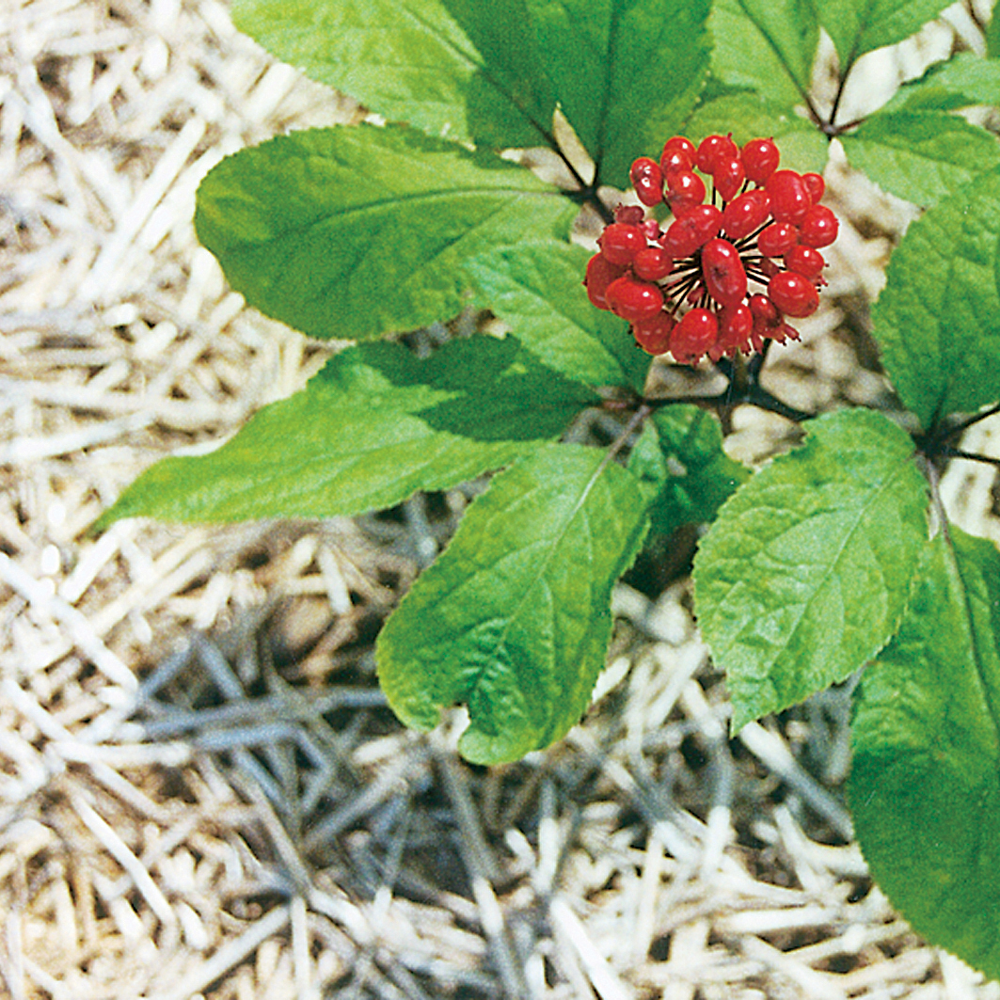
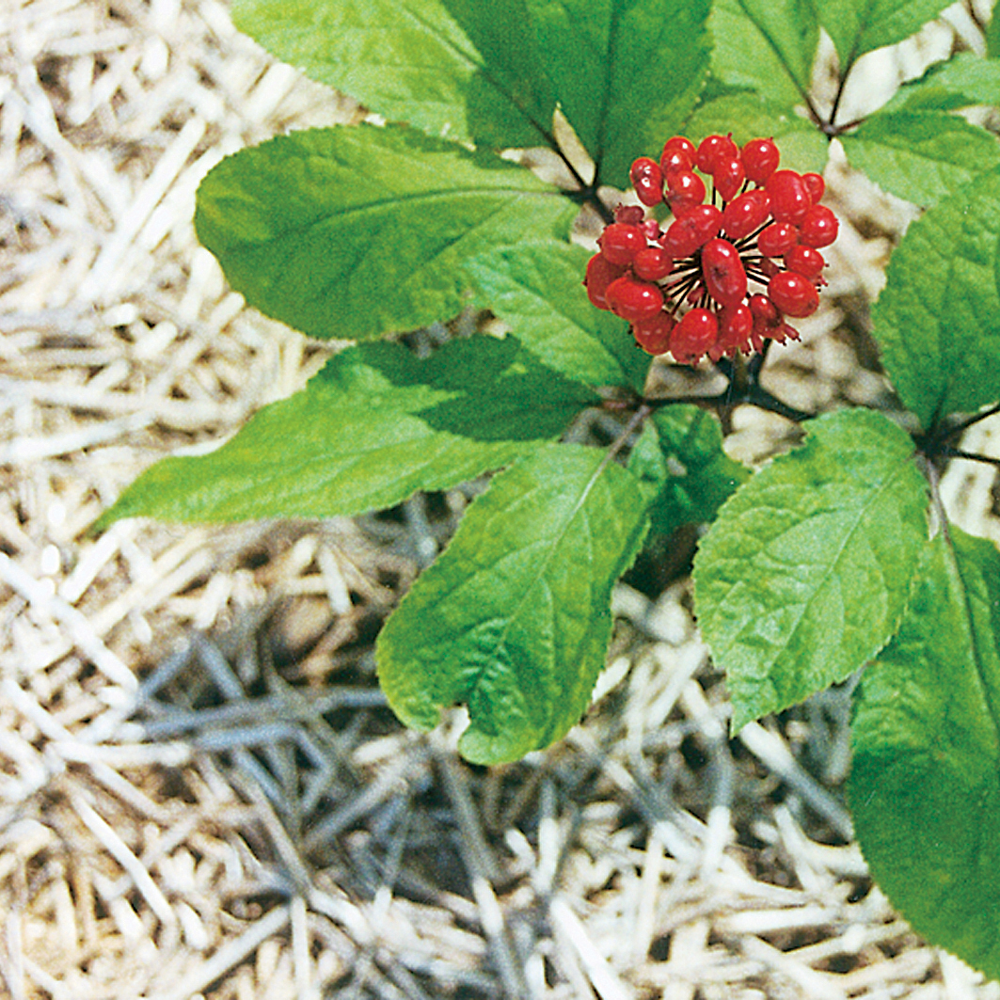

Descrição
Gabirú Xarope
APRESENTAÇÃO:
220 gramas
INDICAÇÃO:
O xarope Gabiru é um composto fitoterápico natural que combate os males respiratórios provocados pelas oscilações de temperatura.
Gabiru também é a melhor prevenção no combate as chamadas doenças de inverno.
COMPOSIÇÃO:
Composto de Mel com extrato de própolis, sabor copaíba, alho, guaco, agrião, poejo e eucalipto.
MODO DE USAR:
2 a 3 colheres de sopa ao dia, ou conforme orientação profissional.
REFERÊNCIAS:
Literatura do fornecedor.
ADVERTÊNCIAS:
1 - Nunca compre medicamento sem orientação de um profissional habilitado.
2 - Imagens meramente ilustrativas.
3 - Pessoas com hipersensibilidade à substância não devem ingerir o produto.
4 - Em caso de hipersensibilidade ao produto, recomenda-se descontinuar o uso e consultar o médico.
5 - Não use o medicamento com o prazo de validade vencido.
6 - Manter em temperatura ambiente (15 a 30ºC). Proteger da luz, do calor e da umidade. Nestas condições, o medicamento se manterá próprio para o consumo, respeitando o prazo de validade indicado na embalagem.
7 - Todo medicamento deve ser mantido fora do alcance das crianças e animais domésticos.
8 - Este medicamento não deve ser utilizado por mulheres grávidas sem orientação médica.
9 - Embora não existam contra-indicações relativas a faixas etárias, recomendamos a utilização do produto para pacientes de idade adulta.
10 - Siga corretamente o modo de usar. Não desaparecendo os sintomas procure orientação médica.
11 - O uso do medicamento durante o período de amamentação não é recomendado.
12 - Este medicamento não deve ser utilizado por menores de 18 anos sem orientação médica.
13 - ´´SE PERSISTIREM OS SINTOMAS, O MÉDICO DEVERA SER CONSULTADO´´.
 
